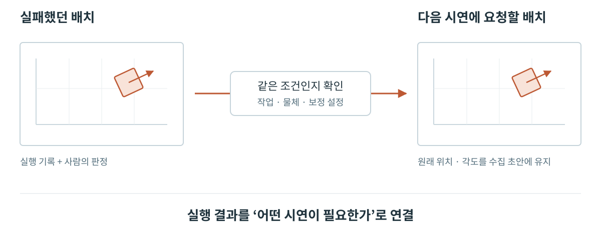
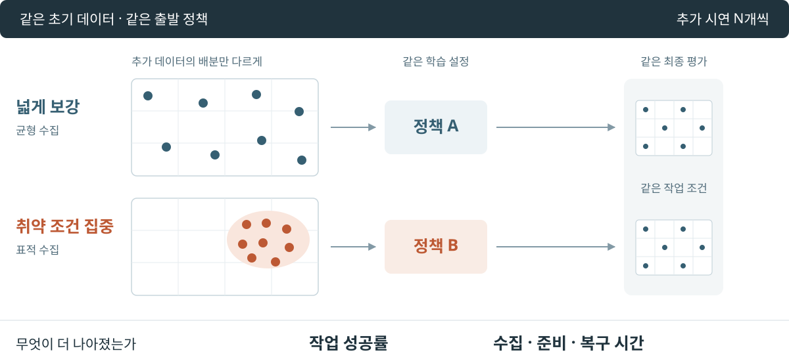

작업영역·시연 기록·다음 수집 계획
수집 조건 설계에서 이어 보기 ↗추천 선택에서 실행 계획으로
비교 가능한 관측의 분리
같은 녹화는 한 번만 센다. 현재 조건과 맞고 작업 판정이 PASS인 시연을 집계하며, 나머지는 제외 이유를 남긴다.
현재 위치에서 시작하는 수집안
현재 물체 위치를 유지한 채 횟수와 seed로 다음 위치·각도를 생성한다. Pick & Place는 작업영역 사이의 순서를 함께 정한다.
Collection Operator에서 추천을 요청하면 기존 수집 기록을 찾아 현재 조건과 비교한다. 선택한 추천은 현재 ASSISTED 작업 초안에 반영한다. 계획을 확정할 때 같은 원본·장면·설정을 다시 읽고, 실제 생성된 위치·회전각·표본화 조건이 선택한 추천과 일치하는지 대조한다.
추천과 실제 실행 계획이 서로 다른 조건을 사용하지 않도록 하는 연결이다. 사용자가 수정한 직접 입력·고정 조건은 유지하며, 오래된 추천은 현재 초안을 덮어쓰지 못한다. 추천 적용과 계획 생성은 구현됐으며, 실제 재수집·정책 개선 효과는 실행·평가 근거로 확인한다.
기록 탐색·추천 선택·계획 생성 구현 ↗기존 계획의 갱신
미관측 조건의 첫 수집
계획과 실제 기록을 대조해 아직 관측하지 못한 조건의 첫 수집을 제안한다.
선택한 제안은 Collection Operator의 기존 작업 초안에 반영한다.
조건별 집계와 초안 변경 구현 ↗실행 결과에서 다음 수집으로
실패했던 조건을, 다시 배울 시연으로

재수집 추천의 조건과 현재 연결 범위
실패한 실행 이후에 물체가 움직였더라도, 재시연할 조건은 현재 위치가 아니라 실행 당시 기록에서 가져온다. 작업·물체·보정 설정이 맞지 않으면 같은 좌표라는 이유만으로 재사용하지 않는다. 추천은 다음 수집 초안이며 로봇 실행 명령은 아니다.
현재 구현은 사람이 실패로 검토한 유한 정책 실행 구간을 원본 조건과 연결한다. 조건별 수집량을 확인하는 경로와 함께 사용하며, 연속 정책 실행의 기록 연결과 재수집·재학습의 개선 효과는 이어서 검증할 부분이다.
조건 대응과 추천 구현 ↗다음 실험 · 데이터 선택의 효과
다음 시연을 어디에 배분할 것인가

실험 설계와 최근 연구에서 가져온 판단 기준
그림은 수집 전략을 비교할 계획이며 측정 결과가 아니다. 먼저 공통 정책을 개발용 작업 조건에서 평가해 표적 조건을 정한다. 그다음 균형 수집과 표적 수집에 같은 개수의 추가 시연을 배정한다. 점은 배분 방식의 개념도이며 특정 실패 위치나 실제 수집 수량을 나타내지 않는다.
두 경로는 초기 데이터·출발 체크포인트·학습 횟수·모델 설정을 맞추고, 독립 학습 seed를 반복해 비교한다. 표적을 고르는 데 쓴 개발 평가와 최종 평가를 분리하고, 최종 조건은 두 경로에 동일하게 적용한다. 취약 조건에서의 개선과 전체 작업 범위의 유지 여부를 함께 본다.
같은 시연 수라도 취득 비용이 같지는 않다. 시도 횟수와 유효 시연 수를 나누고 수집·준비·복구 시간, 사람 개입을 함께 기록한다. 고정 관측의 동작 오차는 중간 진단이며 최종 판단은 실물 작업 성공과 실제 비용으로 한다.
CUPID · DataMIL · QoQ · RoboDrop과 FR5의 실험 범위 ↗관련 시스템
수집안의 실행Collection Operator
위치·각도 설정과 로봇 시연 수집.
Recorder · Curator
동기화 기록과 학습 데이터 구성.